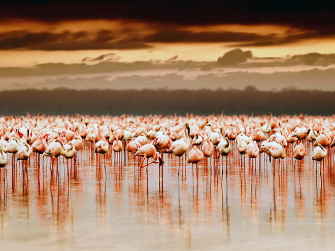
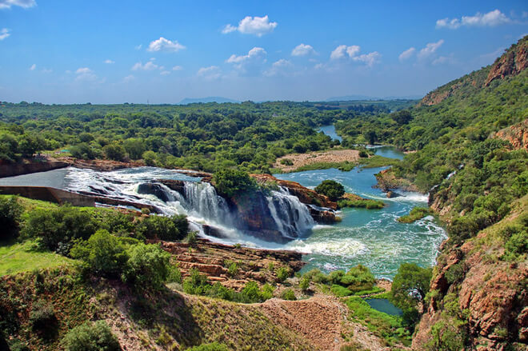
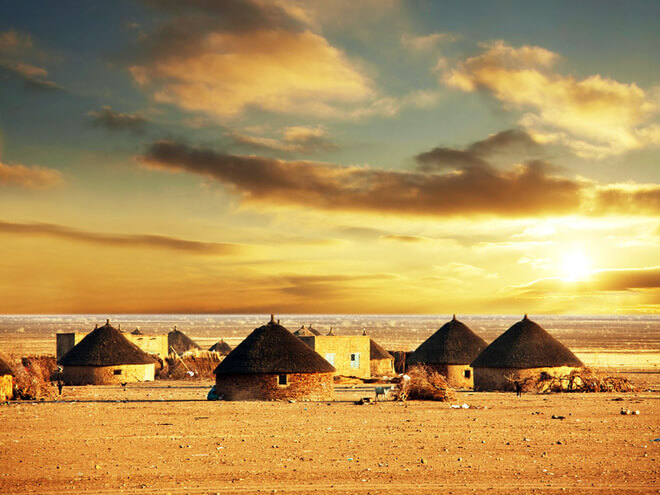
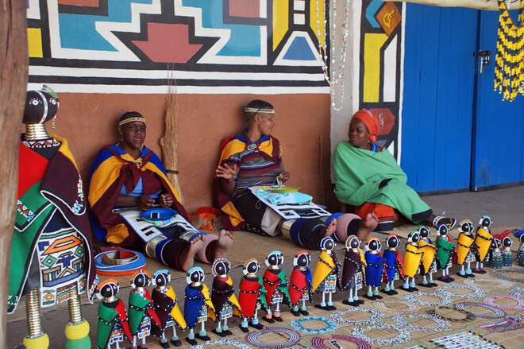
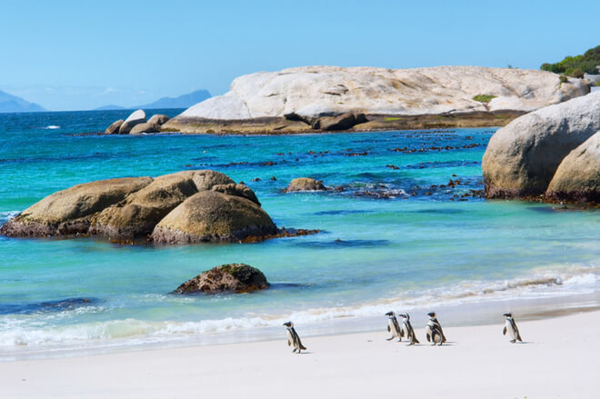
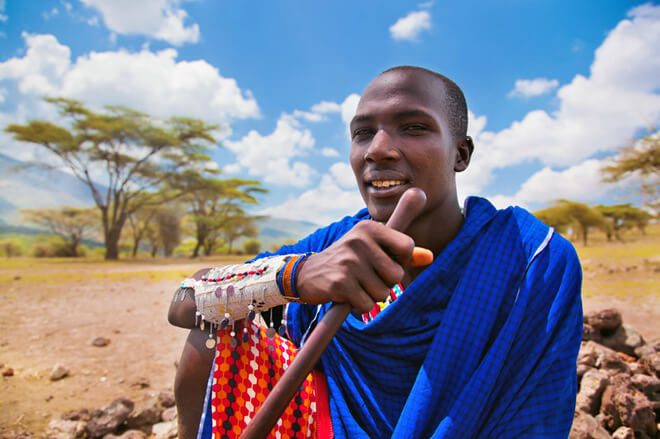
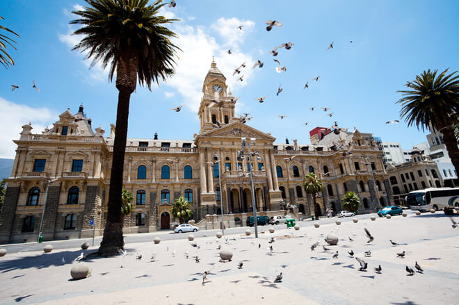
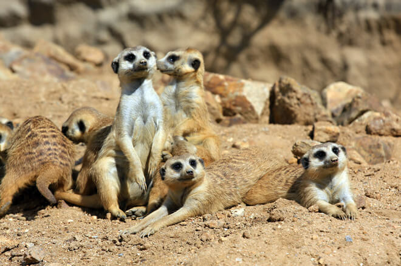
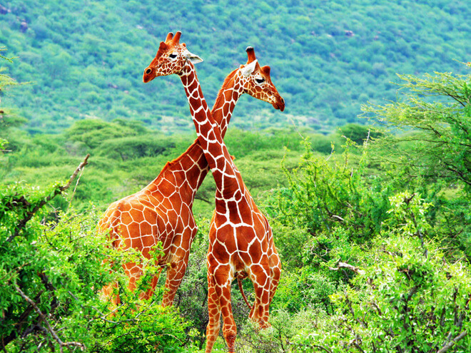

Жаркий африканский континент называют “Колыбелью человечества”, но что на самом деле мы знаем об Африке? Мы много путешествуем, бываем в Европе, колесим по Америке, но мало кто из нас бывал в Африке. Мы знаем так мало об этом континенте. Потому предлагаем познакомиться с ним ближе.

Во времена так называемой "борьбы за Африку" почти все страны были колонизированы иностранными государствами. Независимыми остались лишь Эфиопия и Либерия.
На территории Африки насчитывается 54 страны и одна спорная территория под названием Западная Сахара.
До начала колонизации на территории Африки насчитывалось до 10 000 различных государств и автономных племен со своими языками, обычаями и культурой.
Официальная статистика гласит: наиболее популярным языком на континенте является арабский. На нем говорит более 170 миллионов человек. Второй по популярности - английский (130 млн человек), далее идут суахили (100 млн человек), французский (115 млн человек), и хауса (50 млн человек).

На континенте говорят на 2000 языках.
Около 50% африканцев не старше 25 лет. Согласно демографическим тенденциям, к 2050 году население Африки увеличится более чем в два раза - до 2,3 млрд человек.
Африка является беднейшим и неразвитым континентом в мире. Суммарный ВВП всех стран Африки составляет всего 2,4% мирового ВВП.
Около 40% взрослого населения Африки не имеют среднего образования.

Во время Второй конголезской войны погибло более 5,4 млн человек. По численности жертв этот конфликт уступает лишь Второй мировой войне.
В Нью-Йорке больше пользователей интернет, чем на всей территории Африки.
Сахара - крупнейшая пустыня в мире. Её территория больше, чем континентальная часть США.
Африка - второй самый сухой континент после Австралии.
На африканском континенте более 1 млн граждан Китая. В одной Анголе насчитывается более 350 000 китайцев.

Африка является вторым по величине континентом в мире и занимает около одной пятой от общей площади земной суши. Её территория составляет около 30,2 млн км².
На континенте насчитывается более 25 млн ВИЧ-инфицированных. На данный момент более 17 миллионов человек уже умерли от этой болезни.
Примерно 90% всех случаев заболевания малярией в мире происходит в Африке.
Африка является самым горячим континентом в мире. Пустыни и засушливые районы занимают более 60% её площади.
Африка располагает более 30% минеральных ресурсов Земли.

Нигерия является самой густонаселенной страной в Африке. Её население насчитывает 125-145 миллионов человек. Египет является вторым по численности населения страна с более чем 76 миллионов человек.
Алжир - самая большая страна в Африке. Её площадь составляет 2500 тыс. км2.
Самой маленькой страной является островное государство Сейшельских островов с общей площадью чуть больше 453 квадратных километров.
Озеро Виктория является крупнейшим озером в Африке и вторым по величине пресноводным озером в мире. Её площадь составляет 69 490 км2.
Египет является самым популярным туристическим направлением в Африке, привлекая около 10 миллионов посетителей в год.

В Африке живет крупнейшее в мире животное - африканский слон. Он может весить от 6 до 7 тонн.
Ученые считают, что Африка когда-то была в составе единого супер-континента под названием Пангея. Азия и Южная Америка отделились от Африки примерно 80 млн лет назад. Африканский континент остается относительно стабильным и не подвергался изменениям в течении долгого времени. Геологи считают, что Мадагаскар отделился от Африканского континента около 160 миллионов лет назад.
Древние греки и римляне изначально использовали термин "Африка" только к северной части континента. В переводе с латыни слово Африка означает "солнечный", а с греческого Aphrike в переводе означает "без холода".
Историки подсчитали, что около 7-12 миллионов рабов были перевезены из Африки в Америку между XV и XIX веками.
С 2001 года все страны континента, за исключением Марокко, вошли в так называемый "Африканский союз".

Ислам является доминирующей религией в Африке. Вместе с христианством эти две религии охватывают 85% населения континента. Остальные 15% населения составляют атеисты и представители традиционных африканских религий.
Нигерия является четвертым по величине экспортером нефти в мире и крупнейшим производителем нефти в Африке. Нигерия поставляет на мировой рынок около 2,2 млн баррелей каждый день.
Китай является главным торговым партнером Африки. Объемы торговли составляют около $200 млрд в год.
Прямые инвестиции Китая в Африке превышают $50 млрд.
Более 90% почв Африки являются непригодными для сельского хозяйства.

Более 240 миллионов африканцев страдают от хронического недоедания.
Экваториальная Гвинея – самая богатая страна в Африке. ВВП на душу населения составляет $ 16,507. Ботсвана занимает второе место с ВВП в $ 14 906. На последнем месте находится Зимбабве с 589 долларов в год.
Чад занимает второе место в мире по скорости роста экономики.
Топ-10 самых бедных стран в мире находятся в Африке.
ВВЕРХ